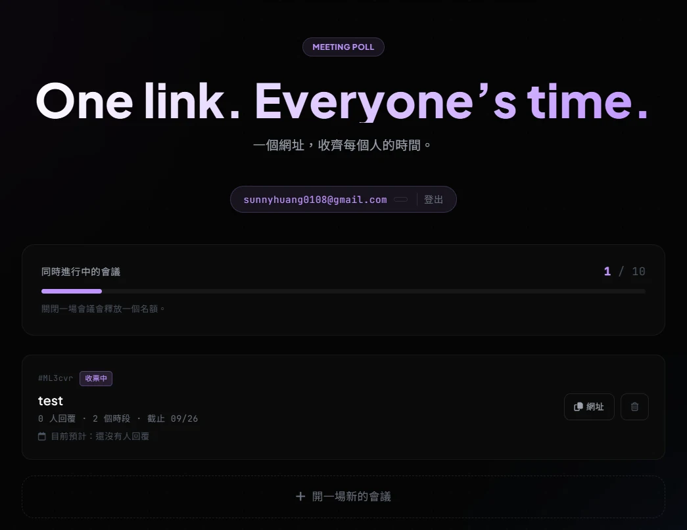
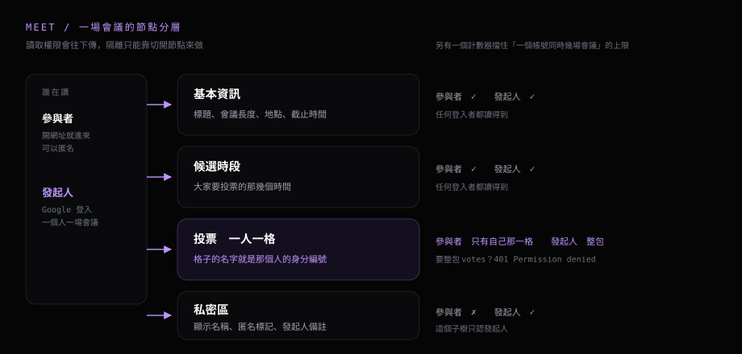

約一場五個人的會議，最花時間的是群組裡來回問「你哪天可以」。我把這件事壓成一個網址。這篇寫它怎麼做出來的。
工作上偶爾要約會議。市面上的服務我用過幾套，有兩件事讓我不想繼續用。
第一件是帳號。要投票得先辦一個。回答的人只是回一次時間，卻要加入另一個平台，資料還留在對方的系統裡。
第二件是配額。免費方案把同時進行的問卷數抓得很緊，超過就要月費。介面上那一整排欄位，我這個情境用不到幾個。
我需要的動作只有三個：開一場、投一次、看結果。所以自己做了 Meet，掛在自己的網域上，資料進自己的資料庫。這篇寫的是 2026-09-24 定稿的那一版。
# 一開始想做成什麼樣子
構想只有一句話。發起人填完表單拿到一個網址，丟進群組，收到的人點開就投，投完就走。參與者不辦帳號、不裝東西、不留在任何平台上。
配額我用另一種方式處理。同時進行的會議自己設一個上限，收掉一場就放回一個名額。這樣它永遠留在免費額度裡，也逼自己把開完的會議收乾淨。
還有一條是自己加的：參與者只看得到自己的答案，發起人看得到全部。投票這件事只要能互相偷看就會互相影響，所以這條從一開始就當硬性要求。

# 架構：權限從資料結構開始設計
這是整個專案最花時間的部分，也最值得留下來。
有後端的站，「誰能看到什麼」寫在 API 裡。請求進來先確認身分，再決定回哪些欄位。
Meet 的前端是 GitHub Pages 上的靜態檔案。瀏覽器直接對資料庫讀寫，中間沒有一層可以藏判斷。
資料放在 Firebase Realtime Database。它自己帶一份權限檔叫 Security Rules，逐個節點宣告誰能讀、誰能寫。
第一版我把一場會議全部塞在同一個子樹底下，靠規則把幾個欄位擋掉。這條路走不通。讀取權限會往下傳，父節點一開放，底下全部跟著開放。
所以做法從「把某個欄位擋起來」換成改資料結構本身。

關鍵在第三塊。投票以「每個人一格」的方式存。格子的名字就是那個人的身分編號。參與者讀得到自己那一格，發起人讀得到整包。
顯示名稱、匿名標記、發起人的私人備註全部收進私密區。這個子樹只認發起人。
權限在資料結構這一層就決定完了，比任何事後補上的檢查都早一步。
# 工具本身怎麼設計
發起人用 Google 登入，填寫標題、會議長度、地點或連結、候選時段、回覆截止時間，按下建立就拿到網址。
收到網址的人點開直接進投票畫面。每個時段有三種狀態：可以、需要提前通知、不行。想留名字就留，不想留的按一下「匿名投票」也能送出。
發起人回到同一頁，看到四色比例條、回覆人數，以及每個人各自選了什麼。某個人的答案要整份拿掉也可以。移除之後他回來就像沒投過，能重投一次。
另外接了一條路進來。公司電腦上有一支自己寫的小工具，讀行事曆、算共同空檔。我讓它把算好的時段編成一串可貼的文字，貼進 Meet 的建立表單就展開成候選時段，省掉手動輸入。兩邊完全不連線，中間只有剪貼簿。
# 中間卡住的地方
一條靜默失效的上限
同時開幾場會議的上限，第一版我把檢查掛在「一場會議」那一層的驗證規則上。
語法合法、Console 沒有警告、正常測試也看不出異常。一直到刻意去撞上限，才發現它從頭到尾沒有被執行過。
原因是驗證規則只會在實際被寫入的那個節點與它的子節點上評估。建立一場會議的時候，寫入真正落在下面一層：
一場會議/基本資訊 ← 寫入實際落在這一層
一場會議/ ← 規則掛在這一層，整條跳過把計數檢查往下搬一層，規則跟寫入路徑對齊，上限才開始生效。
Security Rules 有自己的評估範圍。一條規則可以完全合法，同時在你以為它會跑的地方被跳過。
畫面上看不到，跟真的讀不到是兩件事
用「我在畫面上看不到」來驗證權限，等於沒驗證。測試刻意繞過前端。我另外開一個參與者身分，拿它的憑證直接打資料庫的 REST 介面。
用參與者憑證要「發起人的私人備註」 → 401 Permission denied
用同一個憑證要「全部人的投票」 → 401 Permission denied
用同一個憑證寫「自己那一格」 → 成功這個測試的價值在於它跟畫面無關。有人自己寫 client 去打同一個 API，資料庫給的答案是同一個。
公司那條線要接到哪裡為止
最直覺的做法是讓公司那支工具直接把時段寫進 Meet 的資料庫。代價是公司機器上得存一份能通過規則的憑證。
為了一個個人工具，這條線我選擇不接。改成只交換一串簽章過的文字，形狀大致是這樣（示意）：
<版本前綴>.<內容>.<簽章>
內容 = 時段清單編成一串可貼的文字
簽章 = 用共用金鑰對「內容」算 HMAC-SHA256，取前面幾個 byteHMAC 是用一把共用金鑰對一段資料算出的驗證指紋。Meet 在瀏覽器重算一次，對得起來就表示這串字在傳遞過程中沒被改過。
裡面只有時段本身。與會者、主旨、忙閒明細留在公司電腦上。
這個設計有一個明知故犯的限制：金鑰放在瀏覽器裡，打開開發者工具就找得到。
所以它守的是四件事：複製時少了一段、貼到錯的欄位、手動改掉幾個字元、格式在傳遞中壞掉。
要讓參與者拿不到金鑰，驗證得搬到伺服器上。那個版本會失去現在零後端、零成本、純靜態的形狀。先定義清楚要防什麼，再決定防到哪裡。
# 做完了，也還在用
從使用的人那一側看，整件事剩三步：開一場、勾時段、回來看結果。
群組裡少掉一輪「你週三可以嗎」。回答的人也不必為了回一次時間去加入另一個平台。
我自己每次要約會議都還是開它。想到什麼會繼續加。
比較值得帶走的是底下那個想法，它跟 Whiteboard 是同一條：純靜態站做得到權限控管，前提是權限從資料結構開始設計。參與者看不到別人的答案，靠的是每個人一格。這件事在資料庫那一層就成立，跟介面畫了什麼無關。
有想到更好的做法、或覺得哪裡有漏洞，都歡迎跟我說。程式碼公開在 GitHub，開 issue、丟 PR 或給一顆 star 我都收得到。想直接許願也可以去 許願板 貼一則。
# 參考連結
- • Meet — 直接打開工具
- • Whiteboard — 同一套設定上的第一個工具
- • Realtime Database Security Rules — 官方文件
- • GitHub — GHOST8787/blog
# 技術棧
- 前端：原生 JavaScript ＋ Tailwind，無框架無打包工具
- 部署：GitHub Pages
- 資料庫與權限：Firebase Realtime Database ＋ Security Rules
- 登入：Google Identity Services，頁內登入不開彈窗
- 匿名投票：Firebase 匿名驗證，登入狀態只留在記憶體
- 跨系統傳遞：base64url ＋ HMAC-SHA256，瀏覽器端用 Web Crypto API 驗章
- 共用：跟 Whiteboard 共用同一個 Firebase 專案與同一份權限檔，兩個工具各佔一個頂層節點
GitHub Pages 的 COOP 標頭會干擾 Google 的彈窗登入流程，所以這裡走頁內登入，拿到憑證後在同一頁換成資料庫認得的身分。整套跑在 Firebase 的免費方案上，官方定價頁（2026-09-25 查證）列出的免費額度對這個用量還有很大空間。